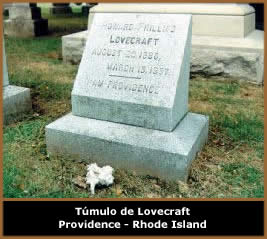

Howard Phillips Lovecraft, filho
de Sarah Susan Phillips e Winfield Scott Lovecraft, nasceu na
casa de seus avós maternos em 20 de agosto de 1890 em Providence,
Rhode Island, Estados Unidos.
Lovecraft
tinha uma saúde delicada, fato que lhe impedia de freqüentar
a escola assiduamente. Porém, foi uma criança precoce.
Aos três anos foi alfabetizado, lia e recitava poemas. Aos
cinco anos leu As Mil e Uma Noites; e aos seis escreveu
O Poema de Ulisses, obra rimada com 88 linhas inspirada
na Odisséia.
A morte de sua avó em 1896, abalou profundamente
a família e especialmente Lovecraft. Em uma carta datada
de 16 de novembro de 1916, o escritor confessa: "...assim
que começo a cair no sono experimento um arrepio de medo,
e luto instintivamente para manter-me acordado...".
Estes pesadelos provavelmente o inspiraram a escrever The
Dreamquest of Unknown Kadath (À Procura de Kadath).
Seu pai faleceu em 1898. Porém, essa perda
não foi tão sentida, pois o Sr. Winfield estava
internado há cinco anos. Ainda no ano de 1898, Lovecraft
ingressa na Slater Avenue School no último ano do ensino
primário, mas a saúde deficitária o impede
de concluir o ano letivo.
A partir daí, o jovem estuda em casa sem
o acompanhamento de tutores. Retorna para a mesma escola em 1902.
Neste período, interessa-se por astronomia e redige o "Jornal
de Astronomia de Rhode Island" que teve 69 edições.
No ano seguinte, Lovecraft deixa a escola novamente devido ao
St. Vitus's Dance, uma doença de ordem nervosa. Seus estudos
ficam limitados ao acompanhamento dos tutores contratados.
O avô Whipple era um proeminente negociante
local. Foi a figura paterna presente na vida de Lovecraft; compartilhou
o fascínio pela literatura gótica e instruiu-lhe
ao Latim. Sua morte em 1904 abalou a estrutura financeira da família.
Lovecraft e sua mãe deixaram o casarão onde moravam,
e mudaram-se para um discreto apartamento na mesma cidade. Pouco
tempo depois, tenta o suicídio jogando-se de bicicleta
no Barrington River.
No final do mesmo ano, entra no "Hope Street
English and Classical High School", e durante os anos seguintes
publica vários artigos de astronomia nos jornais locais.
Em 1908 sofre outro colapso impedindo de concluir o segundo grau,
e entrar na "Brown University". Este fato o abalou de
tal forma, que Lovecraft tornou-se recluso e apático durante
cinco anos, e pouco se sabe deste período.
Em abril de 1914, Lovecraft torna-se membro da
"Associação Unida da Imprensa Amadora"
(UAPA). Participa com muito entusiasmo escrevendo vários
contos e poemas para jornais amadores. O conto O Alquimista
foi publicado em 1916, mas foi escrito oito anos antes. A resposta
favorável o incentivou a continuar publicando suas estórias
de ficção. Logo depois, The Tumb (A
Tumba) e Dagon também tiveram boa aceitação.
Em maio de 1917 tornou-se presidente da UAPA, cargo que ocuparia
até 1922.
No ano de 1918, escreve Polaris, O
Depoimento de Randolph Carter e The Crawling Chaos.
O personagem Randolf Carter pode ser considerado o alter-ego de
Lovecraft.
Após a morte de sua mãe em 1921,
escreve Desespero e O Intruso. Estas obras expressam
a angústia do escritor perante a mais uma perda. Um mês
depois, é convidado a integrar a "Associação
Nacional da Imprensa Amadora".
Numa convenção em Boston, conhece
a ucraniana Sonia H. Greene. Após uma ascensão literária
e social considerável, Lovecraft viaja por regiões
históricas da Costa Oeste, e aproveita as férias
para dar continuidade à atividade de contista. Até
que em março de 1924 casa-se com Sonia, e passa a morar
em Nova York. Em dois anos de desencontros amorosos, infortúnios
financeiros e saúde abalada, o casal separa-se. O autor
retorna para Providence onde vai morar com as tias. Escreve vários
contos em seqüência, e prossegue com estudos sobre
filosofia, economia, arquitetura e política entre outros.
Os
últimos anos de sua vida foram marcados por mais sofrimentos
e desilusões. Seus contos tornam-se excessivamente longos
e difíceis de serem publicados. Lovecraft então,
passa a trabalhar como revisor de textos. Em 1932, morre uma de
suas tias. O escritor muda-se novamente para outra casa, e já
sofre com o câncer de estômago.
No dia 10 de março de 1937, Lovecraft é
internado devido à fortes dores abdominais causadas pelo
câncer. No dia 18 o escritor falece. É enterrado
no mesmo dia no Swan Point Cemetery.
Lovecraft morreu sem nunca
ter publicado um livro. Apenas poemas, contos e ensaios em publicações
regionais. Sua obra foi reunida posteriormente graças a
amigos como August Derleth e Donald Wandrei, que fundaram a editora
"Arkham House" exclusivamente para preservar e divulgar
as obras do autor. Porém, sua importância é
incontestável perante a literatura fantástica mundial.
Suas obras influenciaram escritores como Stephen King e Clive
Barker.
Por Spectrum
Obras
Disponíveis:
Contos (Downloads)